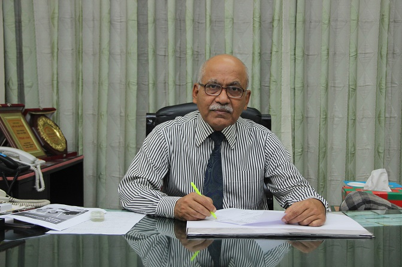
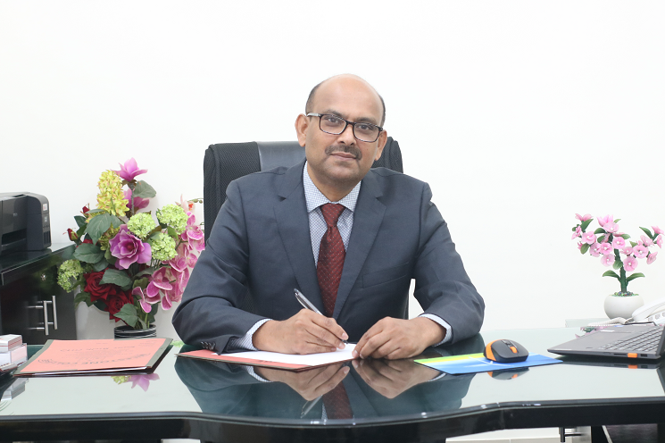

OUR SCHOOL IS 3rd RANKED SCHOOL IN DHAKA CITY.
Milestone College (Bengali: মাইলস্টোন কলেজ) is a Bengali and English-medium, co-educational private school in Uttara Model Town, Dhaka, Bangladesh.
[2] It was founded by Colonel Nuran Nabi (কর্নেল নুরুন নবি) (Retd) who was also the founding principal of RAJUK Uttara Model College.[3]
Milestone ranked tenth nationally in Higher Secondary Certificate (HSC) examination results in 2014.[4]
It has 8 campus and all the campus are situatiing in Dhaka.
We, being backed up by a number of specialist teaching staffs and excellent facilities and resources, offer a wide range of courses in the college. Milestone College is a non-profitable organization established by the MNRS TRUST. Now it is run by a Board of Governors approved by the Board of Intermediate & Secondary Education, Dhaka under the Ministry of Education, Government of the People’s Republic of Bangladesh. The institution, growing from a Kindergarten to a Junior School and then to a Secondary School, has now emerged as a leading College of Bangladesh. Since inception, the institute has been enjoying a proud record of academic excellence and innovation. Over the years, it has generated a significant number of employments of qualified academicians, administrators and staffs.
We, a number of educationists, had been discussing for a long time about the establishment of an educational institution of international standard. Among us, some have worked and are still working in universities and the others have worked at renowned colleges and cadet colleges as professors & principals. In the light of our long experience, we have perceived that our children, despite securing good results and being meritorious, cannot attain the expected results because of excessive coyness. They are introvert; they know but cannot express their thoughts. Moreover, having completed their education in Bangla Medium, most of these students remain weak in writing and speaking in English. As a result, when they go abroad for higher studies, they fall in deep water. Even in our own country, they fail to get a good job in the multinational companies.
As part of its commitment to serve the education needs of the community and the nation, Milestone College envisages to run international curriculums as well. Being able to implement English medium curriculums side by side with the national curriculums in Bengali and English Versions will enable our learners to achieve higher level of academic excellence and professionalism, the two pre-requisites for any anyone to be integrated as global citizens in today’s world.
Adviser's Message

Welcome to Milestone College. We, being backed up by a number of specialist teaching staff and excellent facilities and resources, offer a wide range of courses in the college. Ours is a non-profitable organization established by the MNRS TRUST. Now, it is run by a Board of Governors approved by the Board of Intermediate & Secondary Education, Dhaka under the Ministry of Education, Government of the People’s Republic of Bangladesh. The institution, growing from a Kindergarten to a Junior School and then to a Secondary School, has now emerged as a leading College of Bangladesh. Since inception, the institute has been enjoying a proud record of academic excellence and innovations. Over the years, it has generated a significant number of employments of qualified academicians, administrators and a set of dynamic staff.
50% of our students come to this college following personal recommendations from the previous students or their parents. The management firmly believes that its prime perspective is to help the students in achieving sound potentialities and create a perfect environment for fruitful and prospective studies.
It has already earned a good reputation for its sole professional, affectionately caring and supportive environment. We take personal care of each and every student and remain ever vigilant to his/her development in every field of learning (Moral teaching, discipline, physical development, psychological & emotional cognisance, academic performance etc). At every step of learning we provide them with the necessary guidance, advice and extra help as and when needed. We have students from different backgrounds, castes and creeds from all over Bangladesh (1500 students residing in the hostel). We have 05 (five) campuses at Uttara Model Town, Dhaka-1230, Bangladesh. Each campus is independently equipped with all modern amenities & facilities. In our English Medium section, we follow the national curriculum (S.S.C & H.S.C syllabus) in English version. This has aroused a great interest amongst the guardians. This section is headed by a Colonel (retd.) of Bangladesh Army.
We have Modern Laboratories and facilities for curricular and co-curricular activities. Stage events such as Debate, Extempore Speech, Recitation, Seminar, General Knowledge & Wall Magazine Competition, etc. It takes place every week in our own Auditorium. We publish our College Magazine every year showing all-the-year-round activities and students’ literary and cultural contributions. We also organize seminars, symposiums and work-shops on regular basis to facilitate interactive teaching environment.
Our academic achievement is excellent. In 2008, the Board of Intermediate and Secondary Education, Dhaka under the Ministry of Education has adjudged our college as one of the best educational Institutes under Dhaka Board.
Ms Renee Robinson, one of the senior teachers of Cambridge, UK worked for long with our teachers & students. She also conducted a month-long training course on English Language, Teaching Methods and Child Development. As a follow up of the programme we have arranged the visit of Ms Jane Hunt, another Senior British Teacher for a period of three months for the same purpose.
We believe that teaching is a continuous process and we emphasize on its smooth and everlasting perfection.
Thanking you.
Colonel Nurun Nabi (retd.)
Adviser, Milestone School & College
Ex-Principal Jhenidah and Faujdarhat Cadet College
Founder Principal, Rajuk Uttara Model College and
Milestone School & College
Email: milestone.nabi@gmail.com
Message Of The Principal

Mohammad Ziaul Alam
I welcome you all to Milestone College and express my heartfelt thanks for visiting us online.
We consider every child as unique and so we maintain inclusive learning-teaching environment at every step in our great set-up. It is a fact now that our results are getting better in the public examinations every time. It has been made possible because of our extensive and effective care stretched out to every individual student.
Our students conglomerate here from multifarious backgrounds; various strata of the society. They enter the threshold of our strong and fortified home of learning with a view to getting better facilities. And it is something we value highly that most of the students get higher GPA in HSC Exam than that of their SSC Exam.
We put our students into unequivocal discipline, rear them up with their shoulders erect, guide them to the emerald path of success and when they come out with their heads up at the end of their academic session, they certainly attain better GPA compared to the previous ones. Regular Class Tests, Weekly Tests and Monthly Tests help students become aware all the more of their existing status for the preparation of their studies further. We keep close contact with guardians and make them aware about their wards’ academic state of affairs. A coordinated effort on the part of the guardians, College administration, teachers and students has thus made our dream, objective and efforts a success. Quite naturally we also pay equal stress on the moral and spiritual development of our students. Arrangement of Orientation Course for the newly recruited teachers as well as periodic trainings for the teachers and regular co-curricular & extra-curricular activities for the students are our coherent features.
It may be a repetition to many that we have developed a system of bringing out the potentials of a student through the process of MTs (Monthly Tests), FTs (Fortnightly Tests), STs (Spot Tests) and Term End Exams along with arrangements of Detention Classes for slow learners categorising them on academic and/or discipline grounds. The mechanism of co-ordination amongst Guardians, Form Masters, Students, Teachers and Administration is a trademark for this institution that ultimately leaves no student unattended..
We take the safety matter of our students and staff very seriously. Our team of security guards led by a retired Defense officer is constantly at watch to ensure the safety and security of our students, teachers and officers. They also take special measures to prevent illegal and health vitiating activities in and around our campus.
Educationists believe that psychological as well as physical fitness of students is a pre-requisite to better learning. We have physical trainers, a full-time medical team and a qualified physician. In fact, a system of continuous motivation through a counselling cell is our everyday business.
One experienced psychiatrist keeps constant vigilance over those and guides them how to be away from any kind of juvenile delinquencies. We have a high standard of motivation module to handle every problem – academic and / or administrative – instantly and effectively. It is also to be mentioned here that we have two enriched AC libraries continuously being developed with valuable and essential books and periodicals.
Digitization which we have ensured as an inevitable part of our class-room teaching and all other academic and administrative activities has assuredly raised us to the global stature. Now you can get us at www.milestonecollege.edu.bd and www.milestonecollege.com with updated information regarding admission, current results, payment procedures and all necessary information making everybody’s access to Milestone College quite easy.
We have our own permanent campus in the heart of the Uttara Model Town (3rd Phase) just beside the Uttara Metro Rail Station, Uttara, our campus is minutes’ away from the Rupayan City, Fantasy Island, BRTA Office and Fire Brigade Station . We provide all sorts of outdoor and indoor facilities for our students including gymnasium, fields for playing cricket, football, basketball, volleyball and swimming pool etc. for both boys and girls. We have easy road links with nearby areas like Savar, Ashulia, Mohakhali, Gulshan, Dakkhinkhan, Uttarkhan, Pubail and Gazipur. Our students can reach our campus from distant places viz. Mirpur, Agargaon, Farmgate, Motijheel etc. in minutes through Metro Rail. We also provide our students ample facilities with separate academic and hostel buildings for the boys & girls .
And for all these, we have over eight thousand students and four hundred & sixty teachers in the College section alone including six retired senior defence officers, three retired cadet college Principals, two retired Principals from Govt. Colleges; nine Associate Professors, eighty-nine Assistant Professors and the rest are Lecturers working in this College.
To conclude I, on behalf of Milestone College administration, firmly assure you a bright & glorious prospect of aspiring students at Milestone College.
Mohammad Ziaul Alam
Principal
Email: aziaul@gmail.com
Message of The Vice Principal (Admin)
 The Milestone School & College is located at Uttara Model Town, Dhaka-1230. The location of our Main Campus is at 30 & 44 Gareeb-E-Newaz Avenue, Uttara and the Permanent Campus is at Diabari, Sector-15, Uttara Model Town beside Metro Rail Station, Uttara-1. We also have branches at Mohammadpur, Chalaban, Khilkhet & Gazipur.
Our Academic results in different public examinations are excellent which are highly appreciated by our guardians and all stakeholders. We won positions in the combined merit lists in different public examinations for 13 times. Our performances in various curricular & co-curricular activities have been highly appreciated by the District Administration and the Ministry of Education.
Every year a good number of our students are going abroad for higher studies. A good percentage of our students also join at Different Public Universities, Medical and Engineering colleges and Universities at home and abroad.
We ensure safety and security to each and every student. All the campuses are kept under constant surveillance by CC cameras. All the classrooms are also covered by cameras.
We have a strong security force with the strength of 125 members commanded by a Commander (retd) of Bangladesh Navy. All the entry & exit points of the campuses are well guarded by our security personnel.
A competent medical team headed by a senior Doctor looks after the health medication of our students. We have a mini hospital in the campus.
Our campus is fully digitalized. Our students' activities, reporting time to the campus, their performances, results everything are well informed to the guardians through SMS / mail.
We have separate secured campuses for the girl students
Every year we take our students to different educational institutions, museums, historical places, important industries, installations etc for educational visit/excursions.
We have exchange of teachers programme with UK.
Our students participate in different club and organization activities such as BNCC, Girls Guide, Scouting, Judu, Karat, Swimming, Gymnasium etc.
Our transport system is well organized. We provide transport facilities to more than 1000 students. We also provide free transportation to all the students from Zam Zam Tower, Uttara to the Permanent Campus, Diabari, Uttara.
We take needed individual care of each and every student to bring out their latent qualities and ensure their full flourishing up to their best so that each student can leave the college with the highest satisfaction of their academic results & overall performance.
Md. Masud Alam
Vice Principal (Admin)
Email: masudmilestone1056@gmail.com
The Milestone School & College is located at Uttara Model Town, Dhaka-1230. The location of our Main Campus is at 30 & 44 Gareeb-E-Newaz Avenue, Uttara and the Permanent Campus is at Diabari, Sector-15, Uttara Model Town beside Metro Rail Station, Uttara-1. We also have branches at Mohammadpur, Chalaban, Khilkhet & Gazipur.
Our Academic results in different public examinations are excellent which are highly appreciated by our guardians and all stakeholders. We won positions in the combined merit lists in different public examinations for 13 times. Our performances in various curricular & co-curricular activities have been highly appreciated by the District Administration and the Ministry of Education.
Every year a good number of our students are going abroad for higher studies. A good percentage of our students also join at Different Public Universities, Medical and Engineering colleges and Universities at home and abroad.
We ensure safety and security to each and every student. All the campuses are kept under constant surveillance by CC cameras. All the classrooms are also covered by cameras.
We have a strong security force with the strength of 125 members commanded by a Commander (retd) of Bangladesh Navy. All the entry & exit points of the campuses are well guarded by our security personnel.
A competent medical team headed by a senior Doctor looks after the health medication of our students. We have a mini hospital in the campus.
Our campus is fully digitalized. Our students' activities, reporting time to the campus, their performances, results everything are well informed to the guardians through SMS / mail.
We have separate secured campuses for the girl students
Every year we take our students to different educational institutions, museums, historical places, important industries, installations etc for educational visit/excursions.
We have exchange of teachers programme with UK.
Our students participate in different club and organization activities such as BNCC, Girls Guide, Scouting, Judu, Karat, Swimming, Gymnasium etc.
Our transport system is well organized. We provide transport facilities to more than 1000 students. We also provide free transportation to all the students from Zam Zam Tower, Uttara to the Permanent Campus, Diabari, Uttara.
We take needed individual care of each and every student to bring out their latent qualities and ensure their full flourishing up to their best so that each student can leave the college with the highest satisfaction of their academic results & overall performance.
Md. Masud Alam
Vice Principal (Admin)
Email: masudmilestone1056@gmail.com